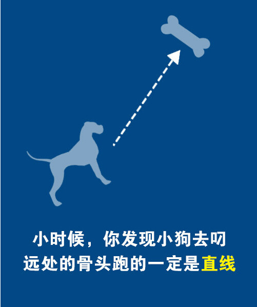
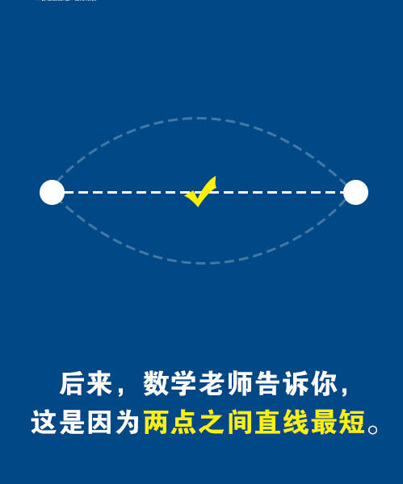
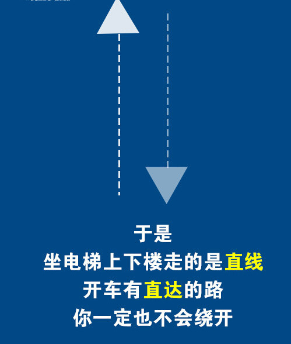
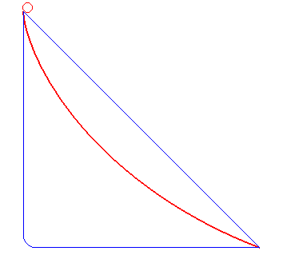
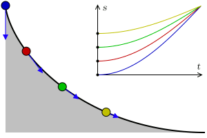

一则科学鸡汤
前段时间在朋友圈里面看到一篇文章，确切说是一篇鸡汤文，他介绍了『最速曲线』的概念。
最速曲线也叫『最速降线』是用来描述物体怎样最快从一个高位点运动到低位点的。在最速曲线上的物体，其运动有一些特殊的特点，这些特点也给我们很大的启发。
- 生活中的事情，直线前进往往都不是最快的。太理想化。
- 从表象看，沿着最速曲线前进的过程，是一个不断调整目标的过程。
- 冷启动的时候要注意势能转化，顺大势而动，会省很多力。
- 但在冷启动的时候，太急于将势能转化为动能，反而会欲速不达。
- 无论从最速曲线上哪一个点启动，运动轨迹都是重合的（最省力的路径都是一定的）；
- 无论从曲线上哪一点出发，达到终点的时间都是一样的。但后出发的一方势能要更大才行。
下面是原文
   

送给大家，共勉之。